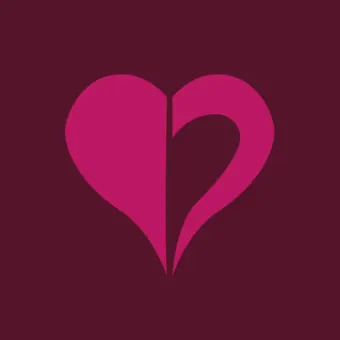

Explicação em base do zodíaco estendido:
Those bound to the aspect of Heart are very concerned with their favorite subject: themselves. It wouldn’t be a stretch to call them ‘self-obsessed’, but not necessarily in a negative way. They simply want to understand the one thing we all are stuck with for our entire lives, i.e. our own minds. Forging an identity is extremely important to the Heart-bound, and every decision and action goes toward building a coherent narrative of their own story. That isn’t to say Heart-bound don’t care deeply for their friends and allies; they just have a tendency to assume that everyone is as concerned with identity as they are. They are excellent at putting on and taking off masks as the situation calls for them. At their best, they are competent, imaginative, and steady. At their worst, they can be overbearing, inflexible, and cold.
Essa explicação feita pela comunidade da comic não está exatamente certa, mas também não está exatamente errada. Acontece que: o aspecto do coração, por conta desta explicação, ou melhor dizendo, descrição, acaba limitando o conceito do aspecto e seu entendimento sobre ele. Então o zodíaco irá influenciar consideravelmente nesta descrição.